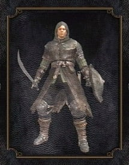
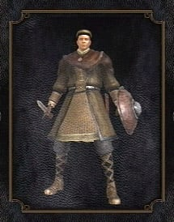
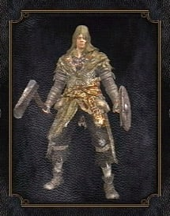

(Guerreiro)
(Guerreiro)
|
Warrior (Guerreiro): Classe bastante versátil
e com os status bem distribuídos entre todos
os atributos. Armadura inicial de peso médio.
Soul Level = 4.
|
 (Cavaleiro)
(Cavaleiro)
|
Knight (Cavaleiro): Provavelmente a melhor classe
para quem jogará pela primeira vez. Conta com uma
armadura pesada e muitos pontos de vida. É um pouco
lento, mas quem precisa de velocidade com um escudo,
não é mesmo? Soul Level = 5.
|
|

(Andarilho)
|
Wanderer (Andarilho): Veloz e com boa velocidade de ataque,
tem boa destreza inicial. Utiliza armadura leve e tem pouca
vida. Soul Level = 3.
|
 (Ladrão)
(Ladrão)
|
Thief (Ladrão): Possui grande resistência a status como
sangramento e envenenamento. Sua arma possui pouco dano
mas pode causar sangramento nos inimigos e tem bastante
dano quando um ataque pelas costas é efetivo. Utiliza
armadura leve e começa com uma Master Key. Soul Level = 4.
|
 (Bandido)
(Bandido)
|
Bandit (Bandido): Apesar de usar armadura leve, essa classe
começa com bastante pontos em força. Isso somado ao machado
de batalha gigante que vem com ela, torna essa classe uma das
que mais consegue gerar dano no início do jogo, logo uma boa
classe para sua primeira vez. Soul Level = 4.
|
 (Caçador)
(Caçador)
|
Hunter (Caçador): A primeira classe focada em ataque a distância.
Possui um arco que tem bom dano, mas é altamente vulnerável em
distâncias menores. Utiliza armadura leve. Soul Level = 4.
|
|

(Feiticeiro)
|
Sorcerer (Feiticeiro): Com armadura muito leve e alta mobilidade,
essa é uma classe para usar magias de alto dano. Você será letal
em longas distâncias mas muito vulnerável em combate corpo a corpo.
Soul Level = 3
|
|

(Piromante):
|
Pyromancer (Piromante): Possui magias com bom dano a distância e
boa capacidade de combate corpo a corpo. Outra boa classe para se
começar no jogo. Utiliza armadura leve. Soul Level = 1.
|
 (Clérigo)
(Clérigo)
|
Cleric (Clérigo): Possui bastante status no atributo Faith (Fé),
o que possibilita usar Miracles (Milagres) para se curar durante
as batalhas. Utiliza armadura leve. Soul Level = 2.
|
 (Desprovido)
(Desprovido)
|
Deprived (Desprovido): Começa sem nenhuma armadura, uma clava e um
escudo de madeira fraco. Os status foram divididos igualmente entre
todos os atributos. Se escolher essa, terá um início muito difícil.
Soul Level = 6.
|